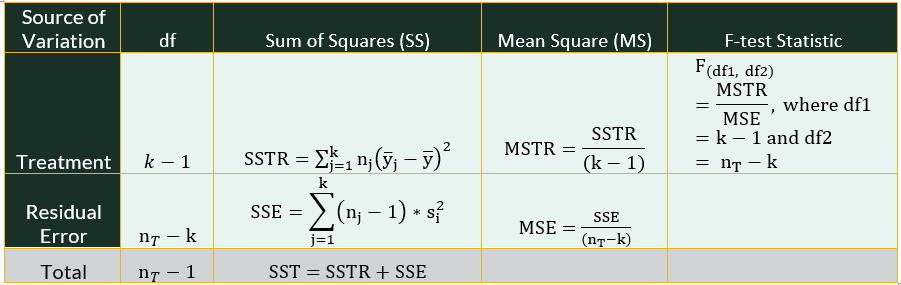

####################################
# Project name: ANOVA
# Data used: congestion.csv and SAT.csv
# Libraries used: tidyverse
####################################9 Analysis of Variance (ANOVA)
- The main goal of this lesson is to understand and conduct one- and two-way ANOVAs and interpret their results. We will learn about Type I and Type II errors, which are applicable forms of error in any hypothesis test. We will also learn how to conduct post-hoc tests when an ANOVA yields significant results.
9.0.1 At a Glance
- In order to succeed in this section, you will need to apply what you learned about variable types (quantitative versus categorical) and hypothesis testing in earlier lessons We will learn how to conduct and interpret an ANOVA, which allows us to compare groups (from a categorical/factor variable) with respect to a continuous variable. Unlike the t-test that is limited to comparing two groups, the ANOVA is meant for three or more groups. We can also follow up a significant ANOVA with post-hoc tests to see which groups are different from each other in regards to the continuous variable.
9.0.2 Lesson Objectives
- Conduct and interpret a one-way ANOVA.
- Choose and use post-hoc tests and contrasts.
- Conduct and interpret a two-way ANOVA.
9.0.3 Consider While Reading
- In this lesson, we continue with our discussion of both hypothesis testing and using inference. However, we are no longer limiting ourselves to one or two populations. ANOVA consists of the calculations that provide information about levels of variability within a regression model and form a basis for calculating tests of significance. This means that ANOVA can be conducted as we will do here, and as part of a regression analysis.
- ANOVA is used to determine if there are differences among three or more populations. In cases of only two groups, an independent samples t-test should be used as was discussed in an earlier lesson. When reading, be sure to make connections back to variable data type, and know that with ANOVA, we are testing for group differences where groups are the categorical X variable or variables, and we want to see if there are group differences in regards to a continuous/numerical Y.
9.1 Analysis of Variance (ANOVA)
- An ANOVA is used to determine if there are differences among three or more groups. If there were only two groups, an independent samples t-test should be used.
- In conducting an ANOVA, we utilize a completely randomized design, comparing sample means computed for each treatment to test whether the population means differ.
- ANOVA has underlying assumptions to be met, and there are alternative methods to use when the assumptions are not met. The assumptions are extensions of those we use when comparing just two populations in a t.test:
- The populations are normally distributed.
- The population standard deviations are unknown but assumed equal.
- Samples are selected independently from each population.
- Here we compare a total of \(k\) populations, rather than just two. Therefore, the competing hypotheses for the one-way ANOVA:
- \(H_0: \mu_1 = \mu_2 = \cdots= \mu_k\)
- \(H_A:\) Not all population means are equal
9.1.1 Omnibus test
- A significant result indicates the omnibus test is significant and that there is a difference between the means. This only suggests that there is at least one group difference somewhere between groups. This is not useful in determining which means are different from each other. Therefore, for the alternative hypothesis to be supported, at least one group must be different from the rest.
- Then, if we find a significant omnibus test, we continue our analysis with planned contrasts and post-hoc tests, which determine which means are statistically significantly different from one another.
9.1.2 ANOVA Methodology
- We first compute the amount of variability between the sample means. This is known as the between-treatments estimate, which compares the sample means to the overall mean, sometimes called the grand mean, or the average pf all the values from the data set.
- Then, we measure how much variability there is within each sample. This is known as the within-treatments estimate, which is essentially a measure of error.
- A ratio of the first quantity to the second forms our test statistic which follows the \(F_{df1,df2}\) distribution, where the degrees of freedom are calculated from the number of groups - 1 (\(df_1: k-1\)) and the total number of observations minus the number of groups (\(df_2: n_t-k\)).
- Note an F distribution behaves differently than a z- or a t- distribution.
- The z-distribution shows how many sample standard deviations (SD) some value is away from the mean.
- The t-distribution shows how many standard errors (SE) away from the mean.
- The F-distribution is used to compare 2 populations’ variances.
9.2 Type I and Type II Errors
In any hypothesis test, including an ANOVA, it is important to acknowledge that there is error, and that it is possible to come up with the wrong conclusion. An important note is that we are calculating results and making conclusions based on probability calculated given the sample we have, the timing it was collected, and any biases that might have been used in designing and securing the data set. We could also be violating assumptions that make the findings less accurate if still accurate at all.
Therefore, it is really important to understand the limitations of what we are doing, and that there is always error! Our main goal as analysts is to minimize error as much as possible in selecting the right parameters, and having a data set that is as unbiased as possible so that the interpretation is as accurate as possible and consistent with the population it is inferring for.
There are 2 types of error:
- Type I Error: Committed when we reject \(H_0\) when \(H_0\) is actually true. False Positive.
- Occurs with probability \(\alpha\). \(\alpha\) is chosen apriori.
- Type II Error: Committed when we do not reject \(H_0\) and \(H_0\) is actually false. False Negative.
- Occurs with probability \(\beta\). Power of the Test = 1−\(\beta\).”For a given sample size \(n\), a decrease in \(\alpha\) will increase \(\beta\) and vice versa.”
- Type I Error: Committed when we reject \(H_0\) when \(H_0\) is actually true. False Positive.
Both \(\alpha\) and \(\beta\) decrease as \(n\) increases. Therefore, an increase in sample size decreases these two types of error.
The two types of error can be mapped onto a hypothesis decision chart that shows the two decisions, reject \(H_0\) or fail to reject \(H_0\), alongside what is actually happening in reality.
Consider the following example of competing hypotheses that relate to the court of law.
- \(H_0\): An accused person is innocent.
- \(H_A\): An accused person is guilty.
Now, think through the consequences of making either a Type I and Type II error:
- Type I error (False Positive): Conclude that the accused is guilty when in reality, they are innocent.
- Type II error (False Negative): Conclude that the accused is innocent when in reality, they are guilty.
 - Both types of error are extremely bad!
- Both types of error are extremely bad!
- In taking another example, let’s look at some sample results from a polygraph. A polygraph (lie detector) is an instrument used to determine if an individual is telling the truth. These tests are considered to be 89% reliable. In other words, if an individual lies, there is a 0.89 probability that the test will detect a lie. Let there also be a 0.10 probability that the test erroneously detects a lie even when the individual is actually telling the truth. Consider the null hypothesis, “the individual is telling the truth,” and look at all 4 options.
With the error conclusions from Type I and Type II error in this example, we either predicted that someone was being honest when they were telling a lie, or we called someone a liar that was telling the truth! Again, both are bad.
Now for a more recent example. Let’s look at the vaccine designed to prevent the spread of COVID-19. Again, we cannot assume the vaccine works without a significant test, so the alternative hypothesis \(H_A\) is framed as against status quo, or that the vaccine does help.
- \(H_0\): Vaccine does not help prevent spread of COVID-19.
- \(H_A\): Vaccine does help prevent the spread of COVID-19.
Now, think through the consequences of making either a Type I and Type II error and come to the fill out the 4 boxes like I did below.
In this scenario, if we made a Type I error, we would make people get vaccines that were not helpful. If we made a Type II error, we would end up not administering the vaccine when in fact it actually could help prevent the spread of COVID-19. In making the decision to give the vaccine, these types of errors were weighed (along with others) and the vaccine ended up being administered because the Type II error was considered more problematic than the Type I.
Some tests are designed to minimize Type I error, while others are designed to minimize Type II error. Selecting alpha levels that are smaller will help reduce Type I error, but at the cost of Type II error. And again, increasing sample size reduces both error.
9.2.1 Some Reasons For Error
- Measurement error refers to the difference between a measured quantity and its true value which could be due to random error or systematic error.
- Random error refers to naturally occurring errors that are to be expected.
- Systematic error refers to miss-calibrated instruments causing error in measurement.
- Bias — the tendency of a sample statistic to systematically over- or underestimate a population parameter.
- Selection bias refers to a systematic exclusion of certain groups from consideration for the sample.
- Non-response bias refers to a systematic difference in preferences between respondents and non-respondents to a survey or a poll.
- Social Desirability bias refers to a bias that refers to the systematic difference between a group’s “socially acceptable” responses to a survey or poll.
9.3 One-Way ANOVA
- One-way ANOVA compares population means based on one categorical variable.
9.3.1 Steps for Conducting a One-Way Anova
- Write the null and alternate hypotheses.
- Compute the F-test statistic.
- Compute the probability for the test statistic (p-value).
- Interpret the probability.
- Write a conclusion.
- If model is significant, run post-hoc tests.
9.3.2 Statistics in a One-Way ANOVA Table
- There are a number of statistics being calculated with an aov() command, with the goal of producing the F-test statistic, which corresponds to a p-value that we can interpret the same way as we did in the earlier lessons (p-value < alpha = significant result - reject the \(H_0\)).

9.3.2.1 Explained Variance
In a one-way ANOVA, first, we compute the explained variance, which in a one-way ANOVA is the sum of squares due to treatments (SSTR), where the treatment is our grouping variable. The explained variance suggests that the variation in outcome can be explained by a model, or in our case, a grouping variable. In computing the SSTR, we square the deviation between each group mean (\(\bar{y}_j\)) and the grand mean \(\bar{y}\) and multiply it by the sample size (\(n_j\)) and sum up all the values \(\sum\). This leads to the following formula:
- \(SSTR = \sum{n_j*(\bar{y}_j-\bar{y}) ^2}\)
Degrees of freedom for the SSTR are computed by the number of groups \((k-1)\).
- \(df_{sstr} = k-1\)
The mean square due to treatment (MSTR) takes the value for the SSTR and divides by the treatment’s degrees of freedom \((k-1)\).
- \(MSTR = SSTR/(k-1)\)
Above in the overall methodology, the MSTR corresponds to the between-treatments estimate.
9.3.2.2 Unexplained Variance
There is also a measure of unexplained variance, which we term error. In a one-way ANOVA, this unexplained variance refers to variability in the outcome that is not explained by the grouping variable. In the table, this error is called the sum of squares error (SSE). SSE is calculated by first multiplying the sample size of group and subtracting one (\(n_j-1\)), and then multiplying that number by its group variance (\(\sigma^2_i\)). Once all groups are calculated, we add it up (\(\sum\)). This leads to the following formula:
- \(SSE = \sum^k_{j=1}{(n_j-1)*\sigma^2_j}\)
This formula above considers the formula and definition of variance (\(\sigma^2\)) and simplifies the formula, which you can also use:
- \(SSE = \sum^k_{j=1}\sum^n_{i=1}(y_{ij}-\bar{y_j})^2/(n-k)\)
Degrees of freedom for the SSE are computed by taking the total number of observations (\(n_t\)) and subtracting the number of groups \((k)\).
- \(df_{sse} = n_t-k\)
The mean square due to error (MSE) takes the SSE and divides by the appropriate degrees of freedom (\(n_t-k\)).
- \(MSE = SSE/(n_t-k)\)
Above in the overall methodology, the MSE corresponds to the within-treatments estimate.
There is a total sum of squares (SST) being calculated in an ANOVA, which refers to the total variance (explained and unexplained). This value is calculated as the total number of observations minus 1 (\(n_t-1\)). We don’t see it explicitly in our R output, but it is needed to help understand the full model.
9.3.2.3 Calculating F
- Finally, to calculate the F-test statistic, we take the MSTR (explained variability) and divide by the MSE (unexplained variability) considering the appropriate degrees of freedom (\(k-1\) and \(n_t-k\)).
- A p-value is computed from that statistic mathematically by using the correct command in R.
- \(F_{k-1,n_t-k} = MSTR/MSE\)
9.3.3 Example of a One-Way ANOVA
- Like the t-test, a one-way ANOVA follows 5 steps, and then includes an optional 6th step after significance is found and confirmed in step 5.
9.3.3.1 Step 1: Set Up Null and Alternative Hypothesis
- The competing hypotheses for the one-way ANOVA:
- \(H_0: \mu_{Atlanta} = \mu_{Houston}= \mu_{LosAngeles} = \mu_{SanFran} = \mu_{DC}\)
- \(H_A:\) Not all population means of congestion levels are equal among the cities
9.3.3.2 Steps 2 and 3: Compute the F-test Statistic and p-Value
First, we read in the data set and give a look at what is included.
- Because we are using read.csv() command, we can set stringsAsFactors argument to TRUE so that the categorical variable will be coded appropriately upon download.
- The summary() command suggests that there is one categorical variable, “City” and one continuous variable, “CongestionRating.”
congestionData <- read.csv("data/congestion.csv", stringsAsFactors = TRUE) summary(congestionData)City CongestionRating Atlanta :25 Min. :44.00 Houston :25 1st Qu.:56.00 Los Angeles :25 Median :59.00 San Francisco :25 Mean :60.06 Washington, DC:25 3rd Qu.:64.00 Max. :77.00We use the aov() command for one-way and later on for a two-way ANOVA.
- In either command, our formula is ContinuousVariable ~ CategoricalVariable - this will allow us to see if there are group differences in CongestionRating (continuous) based on city (categorical).
- Take a good look at the output from these commands to compare the results.
# A common set of commands that work for both a one-way and two-way
# ANOVA: aov() command with output in a followup command: either
# anova() or summary() command.
Anova1way <- aov(CongestionRating ~ City, data = congestionData)
summary(Anova1way) Df Sum Sq Mean Sq F value Pr(>F)
City 4 3251 812.7 37.25 <2e-16 ***
Residuals 120 2618 21.8
---
Signif. codes: 0 '***' 0.001 '**' 0.01 '*' 0.05 '.' 0.1 ' ' 1# anova() command works exactly the same as summary here. This
# command is very prevalent in various textbooks and online
# tutorials.
anova(Anova1way)Analysis of Variance Table
Response: CongestionRating
Df Sum Sq Mean Sq F value Pr(>F)
City 4 3250.7 812.67 37.251 < 2.2e-16 ***
Residuals 120 2617.9 21.82
---
Signif. codes: 0 '***' 0.001 '**' 0.01 '*' 0.05 '.' 0.1 ' ' 1- Using the anova() or summary() commands, we can see the results from the ANOVA table, including the degrees of freedom (Df), sum of squares (Sum Sq), mean square (Mean Sq), F-test statistic (F value) and p-value (Pr(>F)). It also includes asterisks (*) symbols if there are group differences due to our categorical variable. The more asterisks you see, the smaller the significant code. There is a table for these codes within the output marked Signif. codes.
- Reading the codes:
- If there are three asterisks, you would say that that your p-value is less than .001. If there are 2, your p-value is less than .01. 1 asterisk indicates a p-value < .05.
- We never say our p-value is 0, but instead say it is less than ___.
- We do not use .1 as a significance level, although some statisticians mark a p-value less than .1 as “marginally significant”. There is a big debate about this, but I agree with the general consensus, so our threshold for this class is less than .05. Anything greater than or equal to .05 is not significant.
9.3.3.3 Steps 4 and 5: Interpret the Probability and Write a conclusion.
- The F-test statistic is 37.251 and the p-value is < 2.2e-16 ***. This p-value is < all typical alpha values like .05 or .001. This value is very close to 0. We would state that our p-value is less than .001 by looking at the table and noting the three asterisks.
- The p-value result suggests that we support the alternative \(H_A\): Not all population means are equal.
- More specifically we reject the null hypothesis \(H_0\) in support of \(H_A\) and conclude that not all congestion levels are equal among the cities.
9.3.3.4 Step 6: If Model is Significant, Run Post-Hoc Tests
- Pairwise comparisons: There are many tests to compute pairwise comparisons. The tests tend to vary in whether they minimize Type I or Type II error, and by how much. Many of the tests change the distribution in the calculation to alter the final results. We go over the following methods:
- Bonferroni Method;
- TukeyHSD Method
9.3.3.4.1 Bonferroni Method
- The Bonferroni method is a pairwise post-hoc test that is used after finding a statistically significant ANOVA. This method conducts a t-test for each pair of means and adjusts the threshold for statistical significance to ensure that there is a small enough risk of Type I error; it is generally considered a very conservative post hoc test that only identifies the largest differences between means as statistically significant.
- The function has several arguments, such as \(x =\) for the continuous variable (listed first); \(g =\) for the grouping or categorical variable (listed 2nd); and the p-value adjustment, \(p.adj =\), which can be set as __bonf_ for Bonferroni (listed 3rd).
- The output is a matrix of p-values, testing each pair for group differences. A value < alpha signifies significant group differences.
- Based on the output, there are no differences in congestion levels between Houston and Atlanta, San Francisco and Atlanta, and Houston and San Francisco.
- There are group differences in congestion levels between all other remaining groups (p-value < alpha).
pairwise.t.test(congestionData$CongestionRating, congestionData$City, p.adj = "bonf")
Pairwise comparisons using t tests with pooled SD
data: congestionData$CongestionRating and congestionData$City
Atlanta Houston Los Angeles San Francisco
Houston 1.00000 - - -
Los Angeles 9.7e-15 1.3e-15 - -
San Francisco 1.00000 1.00000 < 2e-16 -
Washington, DC 0.00269 0.00071 2.1e-06 3.8e-05
P value adjustment method: bonferroni 9.3.3.4.2 Tukey HSD Method
- The Tukey HSD method is another pairwise post-hoc test that is used after finding a statistically significant ANOVA. This method is used to determine which means are statistically significantly different from each other by comparing each pair of means. This method is less conservative than the Bonferroni post hoc test.
- This test is modified from the Bonferroni test using a q-distribution instead of a t-distribution to calculate the answers.
- Using the TukeyHSD() command, we can use the Anova1way object because we already used the aov() command to produce our model above This aov() command is required before or while running the TukeyHSD() command.
TukeyHSD(Anova1way) Tukey multiple comparisons of means
95% family-wise confidence level
Fit: aov(formula = CongestionRating ~ City, data = congestionData)
$City
diff lwr upr p adj
Houston-Atlanta -0.48 -4.139015 3.179015 0.9962320
Los Angeles-Atlanta 12.24 8.580985 15.899015 0.0000000
San Francisco-Atlanta -1.44 -5.099015 2.219015 0.8113836
Washington, DC-Atlanta 4.96 1.300985 8.619015 0.0024588
Los Angeles-Houston 12.72 9.060985 16.379015 0.0000000
San Francisco-Houston -0.96 -4.619015 2.699015 0.9499289
Washington, DC-Houston 5.44 1.780985 9.099015 0.0006646
San Francisco-Los Angeles -13.68 -17.339015 -10.020985 0.0000000
Washington, DC-Los Angeles -7.28 -10.939015 -3.620985 0.0000021
Washington, DC-San Francisco 6.40 2.740985 10.059015 0.0000373Based on the output, we find similar results to the Bonferroni test. There are no differences in congestion levels between Houston and Atlanta, San Francisco and Atlanta, and Houston and San Francisco. There are group differences in congestion levels between all other remaining groups (p-value < alpha).
With the TukeyHSD() command, we can also determine which group mean is higher than the other by looking at the “diff” score. If you see a negative score than the second group listed in the output is higher than the first group listed. Ignoring the insignificant p-values > .05, we find that both San Francisco and Washington has significantly less congestion than Los Angeles. We find that Los Angeles and Washington have a significantly higher group mean than Atlanta. Los Angeles and Washington DC also have a significantly higher group mean than Houston. Finally, Washington DC has a significantly higher group mean than San Francisco.
9.4 Two-Way ANOVA
- A two-way ANOVA is called a randomized block design.
- The term “block” refers to a matched set of observations across the treatments.
- In a two-way ANOVA, there are now three sources of variation:
- Row variability (due to blocks or Factor B or a first grouping variable),
- Column variability (due to treatments or Factor A or a second grouping variable), and,
- Variability due to chance or SSE.
- In altering the methodology above, the row and column variability take place of the between-treatment estimate listed above, which still corresponds to explained variance. We still have one within-treatment estimate as before, or a measure of unexplained variance.
9.4.1 Steps for Conducting a Two-Way ANOVA
- Write the null and alternate hypotheses for each grouping variable.
- Compute the F-test statistics for each grouping variable.
- Compute the probability for the test statistics (2 p-values for a 2-way ANOVA).
- Interpret the probabilities.
- Write a conclusion.
- If model is significant, run post-hoc tests.
- The steps are the same as a one-way ANOVA listed above, with the exception that now we have 2 grouping variables, so we need 2 F-stats and 2 p-values.
9.4.2 Statistics in a Two-Way ANOVA Table
- We add another row to our ANOVA table when we move from a one-way ANOVA to a two-way ANOVA. The goal is the same, which is to produce a F-test statistic. In a two-way ANOVA, we will have two F-test statistics (one for each grouping variable). Each F-test statistic corresponds to a separate p-value that we can interpret the same way as we did in the last lessons (p-value < alpha = significant result - reject the \(H_0\)). So we can find one group significant and not the other, neither significant, or both significant with one test.
9.4.2.1 Explained Variance
In a two-way ANOVA, we still start by computing the explained variance. Since we have an additional grouping variable, or factor, we will have two sum of squares measures, a sum of squares for factor A (SSA) and a sum of squares for factor B (SSB). Factor B is typically called a row (r) factor, while Factor A is typically called a column (c) factor. However, the order of the output will depend on the order of your formula in R.
The explained variance still suggests that the variation in outcome can be explained by a model, but now it will be due to the two grouping variables. In computing the SSB, we take the number of columns (\(c\)) and we multiply by the sum of the squared deviation between each group B mean (\(\bar{y_j}\)) and the grand mean \(\bar{y}\).
- \(SSB = c*\sum^r_{j=1}{(\bar{y_j}-\bar{y}) ^2}\)
In computing SSA, we take the number of rows and we multiply that number by the sum of the squared deviation between each group A mean and the grand mean
- \(SSA =r*\sum^c_{i=1}{(\bar{y_i}-\bar{y}) ^2}\)
Degrees of freedom for the SSB are computed by the number of rows - 1 \((r-1)\), and the degrees of freedom for SSA are computed as the number of columns - 1 \((c-1)\).
- \(df_{ssb} = r-1\)
- \(df_{ssa} = c-1\)
The mean square due to Factor B (MSB) and Factor A (MSA) both take the value from the appropriate sum of squares (SSB and SSA) and divides that factors degrees of freedom \((r-1)\) or \((c-1)\).
- \(MSB = SSB/(r-1)\)
- \(MSA = SSA/(c-1)\)
9.4.2.2 Unexplained Variance
In a two-way ANOVA, there is still only one measure of unexplained variance, which we term residual error.
The SSE is calculated after deriving the total variance (SST = both explained and unexplained), and subtracting the explained variance (SSB and SSA).
- \(SSE = SST - (SSA + SSB)\)
Degrees of freedom for the SSE are computed by taking the total number of observations (\(n_t\)) and subtracting the number of rows (r) and the number of columns (c) and adding 1 \((n_t-c-r+1)\).
- \(df_{sse} = n_t-c-r+1\)
The mean square due to error (MSE) takes the SSE and divides by the appropriate degrees of freedom \((n_t-c-r+1)\).
- \(MSE = SSE/(n_t-c-r+1)\)
There is a total sum of squares (SST) being calculated mentioned above, which again refers to the total variance (explained and unexplained). To get this calculation, we take the squared deviation between each observation and the grand mean and we sum up all of our values.
There is also a total degrees of freedom in a two-way ANOVA, which is the total number of observations minus 1 (\(n_t-1\)). We don’t see it explicitly in our R output, but it is needed to help understand the full model.
9.4.2.3 Calculating F-test Statistics
- Finally, to calculate the 2 F-test statistics, given a two-way ANOVA, we take both the MSB (explained variability for factor B) and the MSA (explained variability for factor A) and divide both by the MSE (unexplained variability) considering the appropriate degrees of freedom (\(c-1\) and \(r-1\) and \(n_t-c-r+1\)).
- This gives us two scores to evaluate. A p-value is computed from each F-test statistic mathematically by using the correct command in R.
- \(F1_{c-1,n_t-c-r+1 }= MSB/MSE\)
- \(F2_{r-1,n_t-c-r+1 }= MSA/MSE\)
9.4.3 Example of a Two-way ANOVA
- Let’s run an example to compare SAT scores to see if they are comparable from different instructors {Instructor 1, 2, and 3} and across 4 races {Asian.American, Black, Mexican.American, and White}.
9.4.3.1 Step 1: Set Up Null and Alternative Hypothesis
The competing hypotheses for the two-way ANOVA are two-fold:
Hypothesis 1:
- \(H_0: \mu_{Instructor1} = \mu_{Instructor2}= \mu_{Instructor3}\)
- \(H_A:\) Not all population means of SAT scores are equal among the instructors
Hypothesis 2:
- \(H_0: \mu_{Asian.American} = \mu_{Black} = \mu_{Mexical.American} = \mu_{White}\)
- \(H_A:\) Not all population means of SAT scores are equal among races
9.4.3.2 Steps 2 and 3: Compute the F-test Statistics and p-Values
Like a one-way ANOVA, in a two-way ANOVA, we start with an appropriate data set.
- Again, because we are using read.csv() command, we can set stringsAsFactors argument to TRUE so that the categorical variable will be coded appropriately upon download.
- The summary() command suggests that there are two categorical variables, “Instructor” and “Race”, and one continuous variable, “SAT.”
SATdata <- read.csv("data/SAT.csv", stringsAsFactors = TRUE) summary(SATdata)Instructor Race SAT Instructor A:40 Asian.American :30 Min. :1190 Instructor B:40 Black :30 1st Qu.:1328 Instructor C:40 Mexican.American:30 Median :1492 White :30 Mean :1468 3rd Qu.:1592 Max. :1772
9.4.3.3 Steps 4 and 5: Interpret the Probabilities and Write a Conclusion
Anova2way <- aov(SAT ~ Instructor + Race, data = SATdata)
summary(Anova2way) Df Sum Sq Mean Sq F value Pr(>F)
Instructor 2 5932 2966 1.084 0.342
Race 3 2353300 784433 286.624 <2e-16 ***
Residuals 114 311995 2737
---
Signif. codes: 0 '***' 0.001 '**' 0.01 '*' 0.05 '.' 0.1 ' ' 1In the ANOVA results, we find that there was no difference in SAT score based on the Instructor of record. Specifically, we find a F-test statistic of 1.084 and an associated p-value at .342. That p-value is > alpha (.05), and therefore, we fail to reject the null hypothesis \((H_0: \mu_{Instructor1} = \mu_{Instructor2}= \mu_{Instructor3})\).
We also find that Race is significant, with a F-test statistic of 286.624 and an associated p-value of <2e-16 ***. This means that we can reject the null hypothesis and support the alternative hypothesis (\(H_A:\) Not all population means of SAT scores are equal among races).
This means that we can conduct post-hoc tests on our Race variable. If we conduct any post-hoc tests on Instructor, we should find no differences in groups (which we already found in the ANOVA results above). This means additional testing the Instructor variable is an unnecessary step.
9.4.3.4 Step 6: If Model is Significant, Run Post-Hoc Tests
- Using the pairwise.t.test() command, we can run a Bonferroni test on just race by using the command below. This result suggest that there are group differences between all groups. We can tell that because all p-values are less than alpha at .05.
pairwise.t.test(SATdata$SAT, SATdata$Race, p.adj = "bonf")
Pairwise comparisons using t tests with pooled SD
data: SATdata$SAT and SATdata$Race
Asian.American Black Mexican.American
Black < 2e-16 - -
Mexican.American < 2e-16 4.9e-09 -
White 0.0044 < 2e-16 < 2e-16
P value adjustment method: bonferroni - Using the TukeyHSD() Method, we do receive output for both Race and Instructor. As expected, all p-values under the instructor grouping are well above an alpha of .05, meaning not significant (Fail to reject \(H_0\)).
- Receiving similar results to the Bonferroni test with regards to Race, we find all group differences significant. Specifically, Black Americans, Mexican Americans, and White Americans scored lower on their SAT than Asian Americans. Mexican Americans and White Americans scored higher on their SAT than Black Americans. White Americans scored higher than Mexican Americans. Using this command, we can tell which group scored lower than the other by looking at the difference score “diff”.
TukeyHSD(Anova2way) Tukey multiple comparisons of means
95% family-wise confidence level
Fit: aov(formula = SAT ~ Instructor + Race, data = SATdata)
$Instructor
diff lwr upr p adj
Instructor B-Instructor A -0.275 -28.05409 27.50409 0.9996954
Instructor C-Instructor A -15.050 -42.82909 12.72909 0.4056475
Instructor C-Instructor B -14.775 -42.55409 13.00409 0.4189723
$Race
diff lwr upr p adj
Black-Asian.American -339.33333 -374.55195 -304.11472 0.0000000
Mexican.American-Asian.American -248.86667 -284.08528 -213.64805 0.0000000
White-Asian.American -46.90000 -82.11862 -11.68138 0.0040188
Mexican.American-Black 90.46667 55.24805 125.68528 0.0000000
White-Black 292.43333 257.21472 327.65195 0.0000000
White-Mexican.American 201.96667 166.74805 237.18528 0.00000009.5 choose() command
- The Combination function counts the number of ways to choose objects from a total of objects. The order in which the objects are listed does not matter.
- Since repetition is not allowed, we use \(C(n,x) = (n)!/((n-x!)*x!)\)
- In post hoc tests, x is always 2.
- you can calculate the factorial of a number using the factorial function in base R.
n <- 4
# C(4,2) = 4!/2!*(4-2)! manually
(4 * 3 * 2 * 1)/((2 * 1) * (2 * 1))[1] 6# with the factorial function
factorial(4)/(factorial(4 - 2) * factorial(2))[1] 6- A quick check on how many pairs we can expect in our post-hoc output, we can use the choose() command. We always only check 2 groups at a time, so the 2nd argument should remain a 2.
- If we have 4 races, we would use 4,2 inside the command as shown below. This means we should see 6 p-value statistics for 6 pairwise tests.
# with choose function
choose(4, 2)[1] 6- We had 3 instructors, so we would use 3,2 inside the command as shown below. If this variable was significant, we should see 3 p-value statistics for 3 pairwise tests.
choose(3, 2)[1] 39.6 Using AI
Use the following prompt on a generative AI, like chatGPT to learn more about ANOVA analysis.
- Conduct an ANOVA test to compare group means. Use the aov() and anova() functions for ANOVA. Discuss the F-statistic and p-value, and what they indicate about the differences between group means.
9.7 Summary
- In this section, we learned about Type I and Type II error and the importance of reducing both. We also learned about a one-way ANOVA and a two-way ANOVA, including how to conduct them, and when to evaluate post-hoc tests.